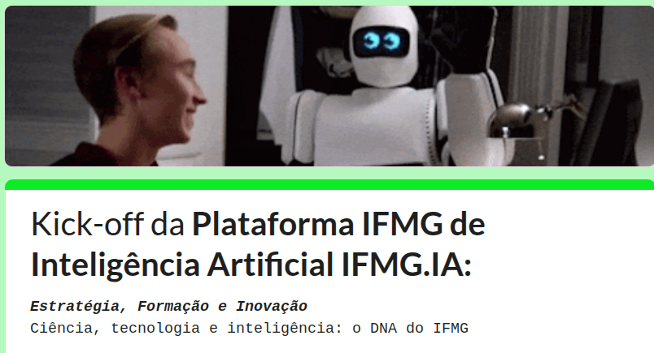

7
Próximos passos
Fase 04: Plano de Ações Estratégicas
Definição de ações de impacto imediato e estruturantes para implementação do plano.
Fase 05: Consolidação do uso
Monitoramento e ajustes contínuos para consolidar o uso responsável da IA na instituição.
Curto prazo
Lançar política de IA, iniciar capacitações e projetos-piloto.
VOTE AQUI NOS DOIS PROTÓTIPOS QUE MAIS GOSTOU!

Médio prazo
Implementar governança participativa e ampliar o uso responsável da IA.
Longo prazo
Consolidar maturidade institucional e monitorar impactos sociais e educacionais.